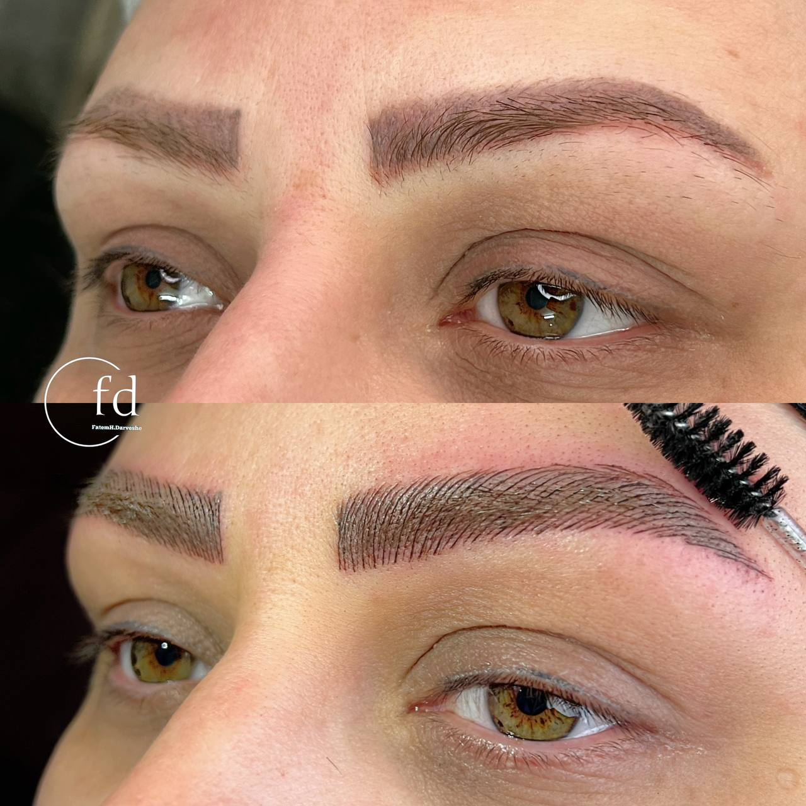

مراقبتهای قبل از انجام میکروبلیدینگ که باید بدانید
نوشته شده در تاریخ ۱۵ مرداد ۱۴۰۴ - توسط: م. اشرفی
همه ما درباره مراقبتهای بعد از میکروبلیدینگ شنیدهایم، اما آیا میدانستید که **آمادگی شما قبل از جلسه** نیز به همان اندازه در نتیجه نهایی کار تاثیرگذار است؟ با رعایت چند نکته ساده، میتوانید به بدن خود کمک کنید تا رنگدانهها را بهتر بپذیرد، حس ناراحتی را به حداقل برسانید و به ماندگاری بیشتر ابروهای جدیدتان کمک کنید. در ادامه، چکلیست کامل مراقبتهای قبل از فیبروز و میکروبلیدینگ را با هم مرور میکنیم.
یک هفته قبل از جلسه
در این هفته، باید پوست خود را برای پذیرش رنگدانهها آماده کنید.
- از لایهبرداری خودداری کنید: استفاده از هرگونه کرم لایهبردار، اسکراب، ماسکهای شیمیایی و روشهایی مانند میکرودرم را در ناحیه پیشانی و ابرو متوقف کنید.
- آفتاب ممنوع: از آفتاب گرفتن یا سولاریوم که باعث التهاب و حساس شدن پوست میشود، جداً خودداری کنید.
- اصلاح ابرو را متوقف کنید: اجازه دهید ابروهایتان رشد طبیعی خود را داشته باشند تا پیگمنتر بتواند بهترین فرم را بر اساس حالت طبیعی ابروی شما طراحی کند.
۴۸ ساعت قبل از جلسه
در این دو روز، باید از مصرف موادی که خون را رقیق میکنند، پرهیز کنید تا از خونریزی بیش از حد حین کار جلوگیری شود.
- داروها: از مصرف داروهایی مانند آسپرین، ایبوپروفن (ژلوفن)، و ویتامین E خودداری کنید. (در صورت مصرف هر داروی خاص، حتماً با پزشک خود و پیگمنتر مشورت کنید).
- نوشیدنیها: از مصرف نوشیدنیهای الکلی خودداری کنید.
۲۴ ساعت قبل از جلسه (روز آخر)
در روز آخر، هدف اصلی ما حفظ آرامش و جلوگیری از تحریک پوست است.
- کافئین ممنوع: از نوشیدن قهوه، نسکافه و نوشیدنیهای انرژیزا پرهیز کنید. کافئین میتواند حساسیت پوست به درد را کمی افزایش دهد.
- ورزش سنگین نکنید: فعالیتهای ورزشی سنگین که باعث افزایش گردش خون و تعریق میشوند را انجام ندهید.
نکته مهم: در روز جلسه، با پوستی تمیز و بدون هیچگونه آرایش در ناحیه چشم و ابرو به مرکز مراجعه کنید. این کار به پیگمنتر کمک میکند تا کار خود را با دقت بیشتری انجام دهد.
با رعایت این نکات ساده، شما با بهترین شرایط ممکن در جلسه میکروبلیدینگ خود حاضر خواهید شد و به ما کمک میکنید تا بهترین و ماندگارترین نتیجه را برای شما خلق کنیم.